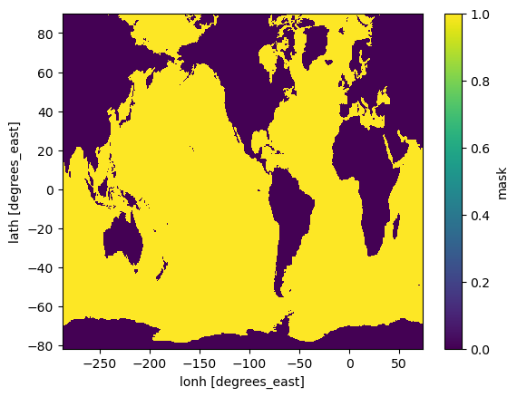
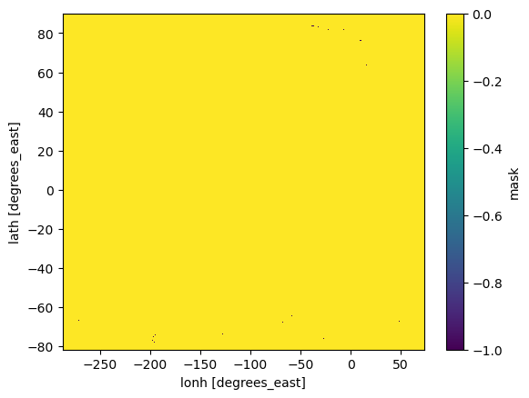
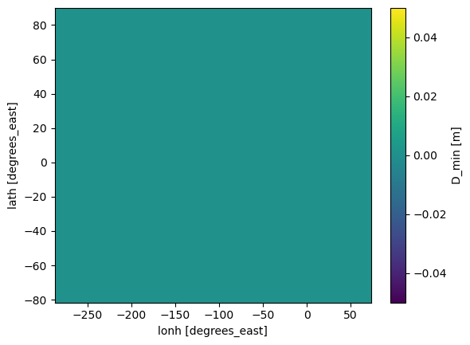
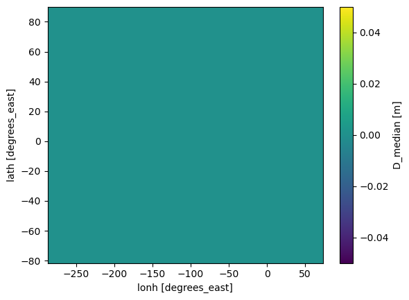
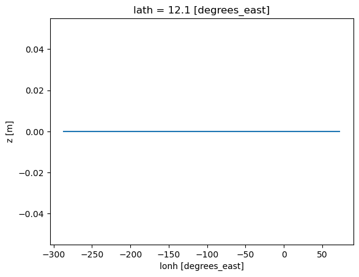
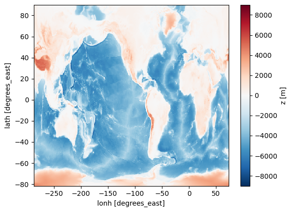

import os
import sys
sys.path.insert(0,os.path.abspath('../src/'))
%load_ext autoreload
%autoreload 2
%matplotlib inline
import numpy as np
import xarray as xr
import matplotlib.pyplot as plt
from topo_edit_util import map_mask, mom6_latlon2ij
path_old = '/glade/work/bryan/MOM6-data-files/Topography/tx2_3v2/'
#file_old = 'topo.sub150.tx2_3v2.srtm.nc'
file_old = 'topo.sub150.tx2_3v2.srtm.edit4.SmL1.0_C1.0.nc'
df_old = xr.open_dataset(path_old+file_old)
df_old
<xarray.Dataset> Size: 20MB
Dimensions: (lath: 480, lonh: 540, latq: 481, lonq: 541)
Coordinates:
* lath (lath) float64 4kB -81.56 -81.46 -81.36 ... 89.33 89.6 89.86
* lonh (lonh) float64 4kB -286.7 -286.0 -285.3 ... 71.33 72.0 72.67
* latq (latq) float64 4kB -81.61 -81.51 -81.41 ... 89.46 89.72 89.91
* lonq (lonq) float64 4kB -287.0 -286.3 -285.7 ... 71.67 72.33 73.0
Data variables: (12/15)
geolon (lath, lonh) float64 2MB ...
geolat (lath, lonh) float64 2MB ...
geolonb (latq, lonq) float64 2MB ...
geolatb (latq, lonq) float64 2MB ...
z (lath, lonh) float32 1MB ...
ocn_frac (lath, lonh) float32 1MB ...
... ...
D2_mean (lath, lonh) float32 1MB ...
D_min (lath, lonh) float32 1MB ...
D_max (lath, lonh) float32 1MB ...
hand_edits (lath, lonh) int32 1MB ...
orig_mask (lath, lonh) int32 1MB ...
D_interp (lath, lonh) float32 1MB ...
Attributes:
Description: Ocean Topography Statistics on MOM6 Grid
Creator: Frank Bryan
Created: 20221228
Generating Code: create_model_topo.f90
Model Grid Version: tx2_3v2
Source Topography Data: /glade/work/bryan/Observations/Topography/SRTM/S...
Edit History: Hand Edit + Lake Fill 04/04/2023df_old['mask'].plot()
<matplotlib.collections.QuadMesh at 0x146f0ce81400>
path_new = '/glade/derecho/scratch/bryan/tx2_3v3_Feb2026/'
file_new = 'topo.sub150.tx2_3v3.SRTM15_V2.4.edit1.nc'
df_new = xr.open_dataset(path_new+file_new)
df_new
<xarray.Dataset> Size: 19MB
Dimensions: (lath: 480, lonh: 540, latq: 481, lonq: 541)
Coordinates:
* lath (lath) float64 4kB -81.56 -81.46 -81.36 ... 89.33 89.6 89.86
* lonh (lonh) float64 4kB -286.7 -286.0 -285.3 ... 71.33 72.0 72.67
* latq (latq) float64 4kB -81.61 -81.51 -81.41 ... 89.46 89.72 89.91
* lonq (lonq) float64 4kB -287.0 -286.3 -285.7 ... 71.67 72.33 73.0
Data variables: (12/14)
geolon (lath, lonh) float64 2MB ...
geolat (lath, lonh) float64 2MB ...
geolonb (latq, lonq) float64 2MB ...
geolatb (latq, lonq) float64 2MB ...
z (lath, lonh) float32 1MB ...
ocn_frac (lath, lonh) float32 1MB ...
... ...
D_median (lath, lonh) float32 1MB ...
D2_mean (lath, lonh) float32 1MB ...
D_min (lath, lonh) float32 1MB ...
D_max (lath, lonh) float32 1MB ...
hand_edits (lath, lonh) int32 1MB ...
orig_mask (lath, lonh) int32 1MB ...
Attributes:
Description: Ocean Topography Statistics on MOM6 Grid
Creator: Frank Bryan
Created: 20260225
Generating Code: create_model_topo.f90
Model Grid Version: tx2_3v3
Source Topography Data: /glade/work/bryan/Observations/Topography/SRTM/S...
Edit History: Hand Edit + Lake Fill 02/25/2026df_new['mask'].plot()
<matplotlib.collections.QuadMesh at 0x146f085f8410>

np.max(np.abs((df_old['geolat'].values - df_new['geolat'].values)))
np.float64(0.0)
np.max(np.abs((df_old['geolon'].values - df_new['geolon'].values)))
np.float64(0.0)
np.max(np.abs((df_old['mask'] - df_new['mask']).values))
np.int32(1)
np.abs((df_old['mask'] - df_new['mask']).values).sum()
np.int64(38)
(df_new['mask'] - df_old['mask']).plot()
<matplotlib.collections.QuadMesh at 0x146f084b2490>

(df_new['D_min'] - df_old['D_min']).plot()
<matplotlib.collections.QuadMesh at 0x146f0856bed0>

(df_new['D_min'] - df_old['D_min']).plot()
<matplotlib.collections.QuadMesh at 0x146f08469e50>
(df_new['D_mean'] - df_old['D_mean']).plot()
np.max(np.abs((df_new['D_mean'] - df_old['D_mean'])))
<xarray.DataArray 'D_mean' ()> Size: 8B
array(0.)
Attributes:
longname: mean ocean depth in cell
units: meters(df_new['D_median'] - df_old['D_median']).plot()
<matplotlib.collections.QuadMesh at 0x146f08211d10>

(df_new['z'] - df_old['z']).isel(lath=300).plot()
[<matplotlib.lines.Line2D at 0x146f080cfc50>]

df_old['z'].plot()
<matplotlib.collections.QuadMesh at 0x146f0815e210>
